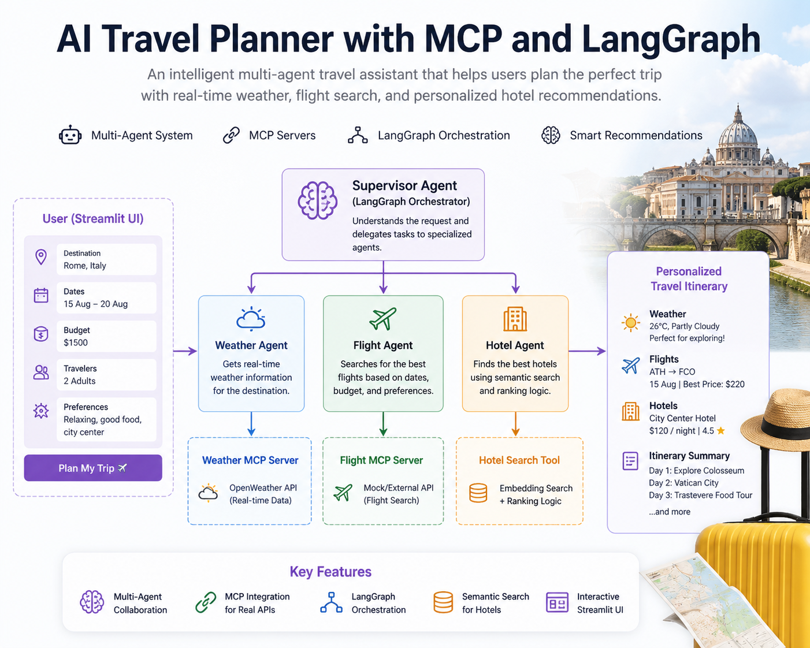

In the rapidly evolving world of AI agents, Model Context Protocol (MCP) has emerged as the universal standard for connecting large language models (LLMs) to external tools, data sources, and services. Introduced by Anthropic in November 2024, MCP provides a standardized interface that makes AI agents more powerful, reliable, and interoperable. Whether you're building a weather agent, GitHub integrator, or database query system, MCP is the backbone of modern agent architectures.

You can download the full health ontology in OWL format here:
⬇ Download health_ontology.owl